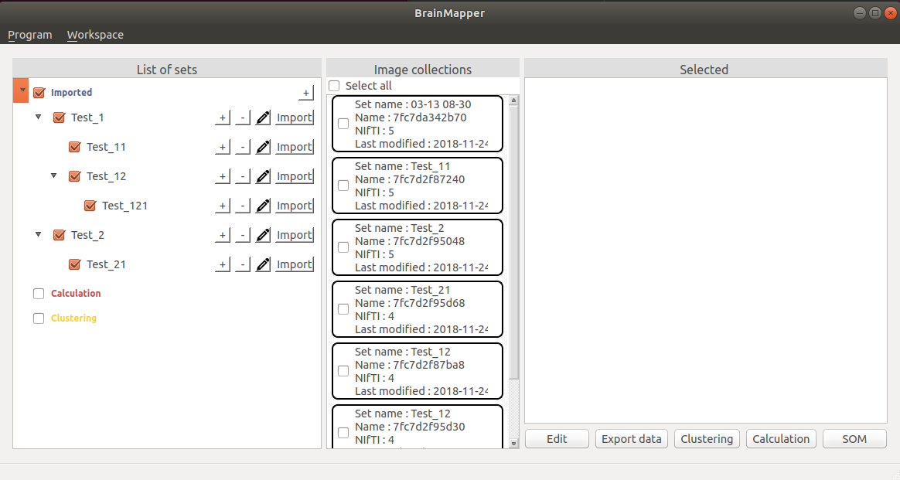

Welcome to the user manual for the BrainMapper software.
A workspace is a folder containing data such as sets, subsets and image collections.
In this following example, Test_1 and Test_2 are sets. Test_11 and Test_12 are subsets of Test_1. Test_21 is a subset of Test_2.
Test_121 is a subset of Test_12 and a sub-subset of Test_1.
Each set and subset contains NIfTI files.

To export your workspace, select the button "Workspace" in the menu. Then click on "Save workspace" and select a directory where the workspace will be saved.
For example, if you have the following workspace, you can exported.
To do, you have to select "Save workspace" in "Workspace". Then you can create a folder "Workspace" like in the following example and select "Ouvrir" (or "Open" in english).
After this exportation, you will have your exported workspace in the folder "Workspace" (for our example).
This operation will save all the NIfTI files on your computer. Please check that you have enough space on your computer before this operation, to prevent any damage.
One you saved your workspace, you can exit the software.
You will be able to import it again later, in another instance of the software. If you re-import it in the same instance, then you will have an error. That's because all your data is already in the software (and name the same way), even if you changed some things in it.
We recommand to save your work when you are done and load your workspace when you come back at it, with another instance of the software.
To import your workspace, you have to select the button "Workspace" in the menu and then to click on "Import workspace".
Then, choose a directory. This directory will be the root of your workspace. That mean all the data (sets, and image collections) will be in it, directly.
If we get back the example used in the previous part, you must select "Import workspace" in "Workspace". Then, you have to choose which workspace you want to import. In the previous example, the workspace has been exported in the folder "Workspace". So you just have to open this folder, like in the following image.
Then, in the BrainMapper main view, you will have this following setup.
To avoid any loss of data, a check will be made. If an error occurs, your workspace does not meet one of the following prerequisites:
To export your selected image collection, select the button "Export data" in the main page of the software. This operation let you choose between the export to NIfTI and the export to CSV. The pop-up shown remember you the number of image collection and NIfTI image selected.
After this step, to export as a NIfTI file, select the button "Export to NIfTI" and click "Apply". This operation let you choose where you want to save these files.
To take less place on the computer, NIfTI images are compressed ("nii.gz").
This operation will save all the NIfTI files on your computer. Please check that you have enough space on your computer before this operation, to prevent any damage.
After this step, to export as a CSV file, select the button "Export to CSV" and click to "Apply". An other pop-up will appear. This let you choose between "Export all points" (all the points with an intensity other than 0) and "Export only the centroid of each file". After choosing your export way, click on the "Apply" button and choose where you want to save the CSV file.
The first line of the CSV contains the header of each column. These are :